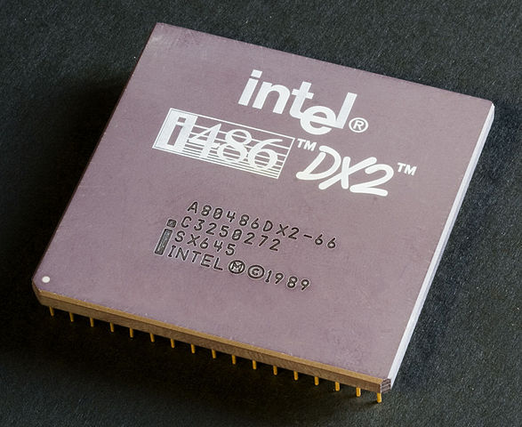
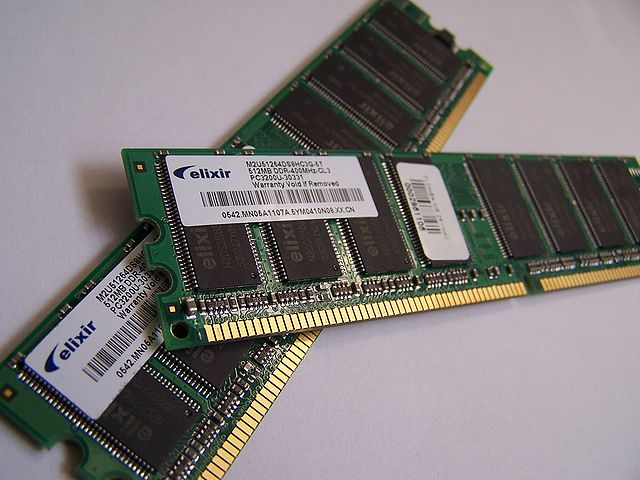

Notices
This is the free HTML version of
We are working on making this site accessible in compliance with Web Content Accessibility Guidelines. If you have suggestions for improvements, please file an issue.
Are you using one of our books in a class? We'd like to know about it. Please consider filling out this short survey.
1 Computer Programming
The goal of this book is to teach you to think like a computer scientist. This way of thinking combines some of the best features of mathematics, engineering, and natural science. Like mathematicians, computer scientists use formal languages to denote ideas—specifically, computations. Like engineers, they design things, assembling components into systems and evaluating trade-offs among alternatives. And like scientists, they observe the behavior of complex systems, form hypotheses, and test predictions.
An important skill for a computer scientist is problem solving. It involves the ability to formulate problems, think creatively about solutions, and express solutions clearly and accurately. As it turns out, the process of learning to program computers is an excellent opportunity to develop problem-solving skills. On one level, you will be learning to write Java programs, a useful skill by itself. But on another level, you will use programming as a means to an end. As we go along, that end will become clearer.
1.1 What Is a Computer?
When people hear the word computer, they often think of a desktop or a laptop. Not surprisingly, searching for “computer” on Google Images (https://images.google.com/) displays rows and rows of these types of machines. However, in a more general sense, a computer can be any type of device that stores and processes data.
Dictionary.com defines a computer as “a programmable electronic device designed to accept data, perform prescribed mathematical and logical operations at high speed, and display the results of these operations. Mainframes, desktop and laptop computers, tablets, and smartphones are some of the different types of computers.”
Each type of computer has its own unique design, but internally they all share the same type of hardware. The two most important hardware components are processors (or CPUs) that perform simple calculations and memory (or RAM) that temporarily stores information. Figure 1.1 shows what these components look like.
 
Users generally see and interact with touchscreens, keyboards, and monitors, but it’s the processors and memory that perform the actual computation. Nowadays it’s fairly standard, even for a smartphone, to have at least eight processors and four gigabytes (four billion cells) of memory.
1.2 What Is Programming?
A program is a sequence of instructions that specifies how to perform a computation on computer hardware. The computation might be something mathematical, like solving a system of equations or finding the roots of a polynomial. It could also be a symbolic computation, like searching and replacing text in a document or (strangely enough) compiling a program.
The details look different in different languages, but a few basic instructions appear in just about every language:
- input:
-
Get data from the keyboard, a file, a sensor, or some other device.
- output:
-
Display data on the screen, or send data to a file or other device.
- math:
-
Perform basic mathematical operations like addition and division.
- decision:
-
Check for certain conditions and execute the appropriate code.
- repetition:
-
Perform an action repeatedly, usually with some variation.
Believe it or not, that’s pretty much all there is to it. Every program you’ve ever used, no matter how complicated, is made up of small instructions that look much like these. So you can think of programming as the process of breaking down a large, complex task into smaller and smaller subtasks. The process continues until the subtasks are simple enough to be performed with the electronic circuits provided by the hardware.
1.3 The Hello World Program
Traditionally, the first program you write when learning a new programming language is called the “Hello World” program. All it does is output the words Hello, World! to the screen. In Java, it looks like this:
public class Hello {
public static void main(String[] args) {
// generate some simple output
System.out.println("Hello, World!");
}
}When this program runs, it displays the following:
Hello, World!Notice that the output does not include the quotation marks.
Java programs are made up of class and method definitions, and methods are made up of statements. A statement is a line of code that performs a basic action. In the Hello World program, this line is a print statement that displays a message to the user:
System.out.println("Hello, World!");System.out.println displays results on the screen; the name println stands for “print line”. Confusingly, print can mean both “display on the screen” and “send to the printer”. In this book, we’ll try to say “display” when we mean output to the screen. Like most statements, the print statement ends with a semicolon (;).
Java is “case-sensitive”, which means that uppercase and lowercase are not the same. In the Hello World program, System has to begin with an uppercase letter; system and SYSTEM won’t work.
A method is a named sequence of statements. This program defines one method named main:
public static void main(String[] args)The name and format of main is special: when the program runs, it starts at the first statement in main and ends when it finishes the last statement. Later, you will see programs that define more than one method.
This program defines a class named Hello. For now, a class is a collection of methods; we’ll have more to say about this later. You can give a class any name you like, but it is conventional to start with a capital letter. The name of the class has to match the name of the file it is in, so this class has to be in a file named Hello.java.
Java uses curly braces (\{ and \}) to group things together. In Hello.java, the outermost braces contain the class definition, and the inner braces contain the method definition.
The line that begins with two slashes (//) is a comment, which is a bit of English text that explains the code. When Java sees //, it ignores everything from there until the end of the line. Comments have no effect on the execution of the program, but they make it easier for other programmers (and your future self) to understand what you meant to do.
1.4 Compiling Java Programs
The programming language you will learn in this book is Java, which is a high-level language. Other high-level languages you may have heard of include Python, C and C++, PHP, Ruby, and JavaScript.
Before they can run, programs in high-level languages have to be translated into a low-level language, also called “machine language”. This translation takes some time, which is a small disadvantage of high-level languages. But high-level languages have two major advantages:
It is much easier to program in a high-level language. Programs take less time to write, they are shorter and easier to read, and they are more likely to be correct.
High-level languages are portable, meaning they can run on different kinds of computers with few or no modifications. Low-level programs can run on only one kind of computer.
Two kinds of programs translate high-level languages into low-level languages: interpreters and compilers. An interpreter reads a high-level program and executes it, meaning that it does what the program says. It processes the program a little at a time, alternately reading lines and performing computations. Figure 1.2 shows the structure of an interpreter.
In contrast, a compiler reads the entire program and translates it completely before the program starts running. The high-level program is called the source code. The translated program is called the object code, or the executable. Once a program is compiled, you can execute it repeatedly without further translation of the source code. As a result, compiled programs often run faster than interpreted programs.
Note that object code, as a low-level language, is not portable. You cannot run an executable compiled for a Windows laptop on an Android phone, for example. To run a program on different types of machines, it must be compiled multiple times. It can be difficult to write source code that compiles and runs correctly on different types of machines.
To address this issue, Java is both compiled and interpreted. Instead of translating source code directly into an executable, the Java compiler generates code for a virtual machine. This “imaginary” machine has the functionality common to desktops, laptops, tablets, phones, etc. Its language, called Java byte code, looks like object code and is easy and fast to interpret.
As a result, it’s possible to compile a Java program on one machine, transfer the byte code to another machine, and run the byte code on that other machine. Figure 1.3 shows the steps of the development process. The Java compiler is a program named javac. It translates .java files into .class files that store the resulting byte code. The Java interpreter is another program, named java, which is short for “Java Virtual Machine” (JVM).
The programmer writes source code in the file Hello.java and uses javac to compile it. If there are no errors, the compiler saves the byte code in the file Hello.class. To run the program, the programmer uses java to interpret the byte code. The result of the program is then displayed on the screen.
Although it might seem complicated, these steps are automated for you in most development environments. Usually, you only have to press a button or type a single command to compile and interpret your program. On the other hand, it is important to know what steps are happening in the background, so if something goes wrong you can figure out what it is.
1.5 Displaying Two Messages
You can put as many statements as you like in the main method. For example, to display more than one line of output:
public class Hello2 {
public static void main(String[] args) {
// generate some simple output
System.out.println("Hello, World!"); // first line
System.out.println("How are you?"); // another line
}
}As this example also shows, you can put comments at the end of a line as well as on lines all by themselves.
Phrases that appear in quotation marks are called strings, because they contain a sequence of characters strung together in memory. Characters can be letters, numbers, punctuation marks, symbols, spaces, tabs, etc.
System.out.println appends a special character, called a newline, that moves to the beginning of the next line. If you don’t want a newline at the end, you can use print instead of println:
public class Goodbye {
public static void main(String[] args) {
System.out.print("Goodbye, ");
System.out.println("cruel world");
}
}
In this example, the first statement does not add a newline, so the output appears on a single line:
Goodbye, cruel worldNotice that there is a space at the end of the first string, which appears in the output just before the word cruel.
1.6 Formatting Source Code
In Java source code, some spaces are required. For example, you need at least one space between words, so this program is not legal:
publicclassGoodbye{
publicstaticvoidmain(String[] args) {
System.out.print("Goodbye, ");
System.out.println("cruel world");
}
}But most other spaces are optional. For example, this program is legal:
public class Goodbye {
public static void main(String[] args) {
System.out.print("Goodbye, ");
System.out.println("cruel world");
}
}The newlines are optional, too. So we could just write this:
public class Goodbye { public static void main(String[] args)
{ System.out.print("Goodbye, "); System.out.println
("cruel world");}}It still works, but the program is getting harder and harder to read. Newlines and spaces are important for visually organizing your program, making it easier to understand the program and find errors when they occur.
Many editors will automatically format source code with consistent indenting and line breaks. For example, in DrJava (see Appendix 18.1) you can indent your code by selecting all text (Ctrl+A) and pressing the Tab key.
Organizations that do a lot of software development usually have strict guidelines on how to format source code. For example, Google publishes its Java coding standards for use in open source projects: https://google.github.io/styleguide/javaguide.html.
You probably won’t understand these guidelines now, because they refer to language features you haven’t yet seen. But you might want to refer to them periodically as you read this book.
1.7 Using Escape Sequences
It’s possible to display multiple lines of output with only one line of code. You just have to tell Java where to put the line breaks:
public class Hello3 {
public static void main(String[] args) {
System.out.print("Hello!\nHow are you doing?\n");
}
}The output is two lines, each ending with a newline character:
Hello!
How are you doing?Each \n is an escape sequence, or two characters of source code that represent a single character. (The backslash allows you to escape the string to write special characters.) Notice there is no space between \n and How. If you add a space there, there will be a space at the beginning of the second line.
\n |
newline |
|---|---|
\t |
tab |
\" |
double quote |
\\ |
backslash |
Java has a total of eight escape sequences, and the four most commonly used ones are listed in Table 1.1. For example, to write quotation marks inside of strings, you need to escape them with a backslash:
System.out.println("She said \"Hello!\" to me.");The result is as follows:
She said "Hello!" to me.1.8 What Is Computer Science?
This book intentionally omits some details about the Java language (such as the other escape sequences), because our main goal is teaching you how to think like a computer scientist. Being able to understand computation is much more valuable than just learning how to write code.
If you’re interested in learning more about Java itself, Oracle maintains an official set of tutorials on its website (https://thinkjava.org/tutorial). The “Language Basics” tutorial, found under “Learning the Java Language”, is a good place to start.
One of the most interesting aspects of writing programs is deciding how to solve a particular problem, especially when there are multiple solutions. For example, there are numerous ways to sort a list of numbers, and each way has its advantages. In order to determine which way is best for a given situation, we need techniques for describing and analyzing solutions formally.
An algorithm is a sequence of steps that specifies how to solve a problem. Some algorithms are faster than others, and some use less space in computer memory. Computer science is the science of algorithms, including their discovery and analysis. As you learn to develop algorithms for problems you haven’t solved before, you will learn to think like a computer scientist.
Designing algorithms and writing code is difficult and error-prone. For historical reasons, programming errors are called bugs, and the process of tracking them down and correcting them is called debugging. As you learn to debug your programs, you will develop new problem-solving skills. You will need to think creatively when unexpected errors happen.
Although it can be frustrating, debugging is an intellectually rich, challenging, and interesting part of computer science. In some ways, debugging is like detective work. You are confronted with clues, and you have to infer the processes and events that led to the results you see. Thinking about how to correct programs and improve their performance sometimes even leads to the discovery of new algorithms.
1.9 Debugging Programs
It is a good idea to read this book in front of a computer so you can try out the examples as you go. You can run many of the examples directly in DrJava’s Interactions pane (see Appendix 18.2). But if you put the code in a source file, it will be easier to try out variations.
Whenever you are experimenting with a new feature, you should also try to make mistakes. For example, in the Hello World program, what happens if you leave out one of the quotation marks? What if you leave out both? What if you spell println wrong? These kinds of experiments help you remember what you read. They also help with debugging, because you learn what the error messages mean. It is better to make mistakes now and on purpose than later on and accidentally.
Debugging is like an experimental science: once you have an idea about what is going wrong, you modify your program and try again. If your hypothesis was correct, then you can predict the result of the modification, and you take a step closer to a working program. If your hypothesis was wrong, you have to come up with a new one.
Programming and debugging should go hand in hand. Don’t just write a bunch of code and then perform trial-and-error debugging until it all works. Instead, start with a program that does something and make small modifications, debugging them as you go, until the program does what you want. That way, you will always have a working program, and isolating errors will be easier.
A great example of this principle is the Linux operating system, which contains millions of lines of code. It started out as a simple program Linus Torvalds used to explore the Intel 80386 chip. According to Larry Greenfield in The Linux Users’ Guide, “One of Linus’s earlier projects was a program that would switch between printing AAAA and BBBB. This later evolved to Linux.”
Finally, programming sometimes brings out strong emotions. If you are struggling with a difficult bug, you might feel angry, despondent, or embarrassed. Remember that you are not alone, and virtually every programmer has had similar experiences. Don’t hesitate to reach out to a friend and ask questions!
1.10 Vocabulary
Throughout the book, we try to define each term the first time we use it. At the end of each chapter, we include the new terms and their definitions in order of appearance. If you spend some time learning this vocabulary, you will have an easier time reading the following chapters.
- problem solving:
-
The process of formulating a problem, finding a solution, and expressing the solution.
- hardware:
-
The electronic and mechanical components of a computer, such as CPUs, RAM, and hard disks.
- processor:
-
A computer chip that performs simple instructions like basic arithmetic and logic.
- memory:
-
Circuits that store data as long as the computer is turned on. Not to be confused with permanent storage devices like hard disks and flash.
- program:
-
A sequence of instructions that specifies how to perform tasks on a computer. Also known as “software”.
- programming:
-
The application of problem solving to creating executable computer programs.
- statement:
-
Part of a program that specifies one step of an algorithm.
- print statement:
-
A statement that causes output to be displayed on the screen.
- method:
-
A named sequence of statements.
- class:
-
For now, a collection of related methods. (You will see later that there is a lot more to it.)
- comment:
-
A part of a program that contains information about the program but has no effect when the program runs.
- high-level language:
-
A programming language that is designed to be easy for humans to read and write.
- low-level language:
-
A programming language that is designed to be easy for a computer to run. Also called “machine language”.
- portable:
-
The ability of a program to run on more than one kind of computer.
- interpret:
-
To run a program in a high-level language by translating it one line at a time and immediately executing the corresponding instructions.
- compile:
-
To translate a program in a high-level language into a low-level language, all at once, in preparation for later execution.
- source code:
-
A program in a high-level language, before being compiled.
- object code:
-
The output of the compiler, after translating the program.
- executable:
-
Another name for object code that is ready to run on specific hardware.
- virtual machine:
-
An emulation of a real machine. The JVM enables a computer to run Java programs.
- byte code:
-
A special kind of object code used for Java programs. Byte code is similar to object code, but it is portable like a high-level language.
- string:
-
A sequence of characters; the primary data type for text.
- newline:
-
A special character signifying the end of a line of text. Also known as “line ending”, “end of line” (EOL), or “line break”.
- escape sequence:
-
A sequence of code that represents a special character when used inside a string.
- algorithm:
-
A procedure or formula for solving a problem, with or without a computer.
- computer science:
-
The scientific and practical approach to computation and its applications.
- bug:
-
An error in a program.
- debugging:
-
The process of finding and removing errors.
1.11 Exercises
At the end of each chapter, we include exercises you can do with the things you’ve learned. We encourage you to at least attempt every problem. You can’t learn to program only by reading about it; you have to practice.
Before you can compile and run Java programs, you might have to download and install a few tools. There are many good options, but we recommend DrJava, which is an “integrated development environment” (IDE) well suited for beginners. Instructions for getting started are in Appendix 18.
The code for this chapter is in the ch01 directory of ThinkJavaCode2. See page for instructions on how to download the repository. Before you start the exercises, we recommend that you compile and run the examples.
Exercise 1.1. Computer scientists have the annoying habit of using common English words to mean something other than their common English meanings. For example, in English, statements and comments are the same thing, but in programs they are different.
In computer jargon, what’s the difference between a statement* and a comment?*
What does it mean to say that a program is portable?
In common English, what does the word compile* mean?*
What is an executable? Why is that word used as a noun?
The vocabulary section at the end of each chapter is intended to highlight words and phrases that have special meanings in computer science. When you see familiar words, don’t assume that you know what they mean!
Exercise 1.2. Before you do anything else, find out how to compile and run a Java program. Some environments provide sample programs similar to the example in Section 1.3.
Type in the Hello World program; then compile and run it.
Add a print statement that displays a second message after the
Hello, World!. Say something witty like,How are you?. Compile and run the program again.Add a comment to the program (anywhere), recompile, and run it again. The new comment should not affect the result.
This exercise may seem trivial, but it is the starting place for many of the programs we will work with. To debug with confidence, you will need to have confidence in your programming environment.
In some environments, it is easy to lose track of which program is executing. You might find yourself trying to debug one program while you are accidentally running another. Adding (and changing) print statements is a simple way to be sure that the program you are looking at is the program you are running.
Exercise 1.3. It is a good idea to commit as many errors as you can think of, so that you see what error messages the compiler produces. Sometimes the compiler tells you exactly what is wrong, and all you have to do is fix it. But sometimes the error messages are misleading. Over time you will develop a sense for when you can trust the compiler and when you have to figure things out yourself.
Starting with the Hello World program, try out each of the following errors. After you make each change, compile the program, read the error message (if there is one), and then fix the error.
Remove one of the opening curly braces.
Remove one of the closing curly braces.
Instead of
main, writemian.Remove the word
static.Remove the word
public.Remove the word
System.Replace
printlnwithPrintln.Replace
printlnwithprint.Delete one parenthesis.
Add an extra parenthesis.